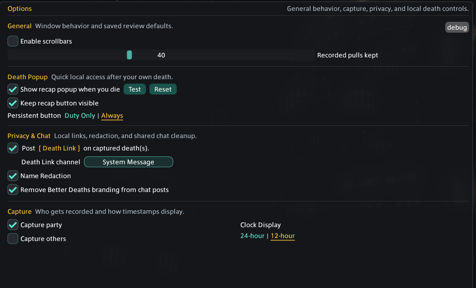
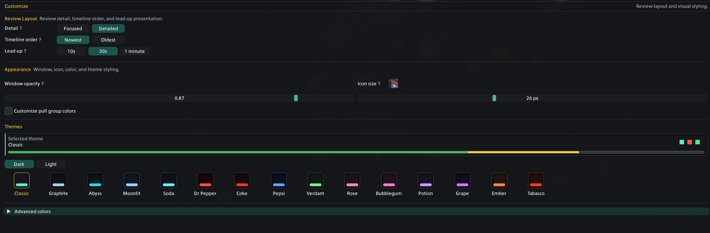

Options
Control behavior and capture
Options changes what Better Deaths does. Customize changes how it looks.

Customize
Shape the review workspace
Choose how much review information is shown, how it is ordered, and how the plugin fits your UI.

Data & privacy
Know what is stored and shared
Configuration and recorded pulls stay on your computer. Pull files can include names, jobs, duty details, timing, positions, waymarks, HP, shields, events, actions, statuses, and mitigation context.
Data shows the number of saved pulls, detail-file count, recorded-pull size, total plugin folder size, debug-file size, and the local folder path.
It protects screenshots and shared display. Existing local pull files may still contain the original captured names.
Death links are Dalamud chat payloads that help another Better Deaths user find a matching local recap. They are not web uploads.
When you choose the FFLogs source, the report code is sent to WTF.DIG's service so it can retrieve that report from FFLogs. Local Pull analysis does not use that lookup.
The feedback button asks for confirmation, then opens the Punish Discord invite. Better Deaths does not attach pull data to that link.